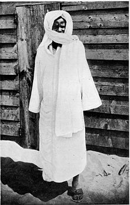
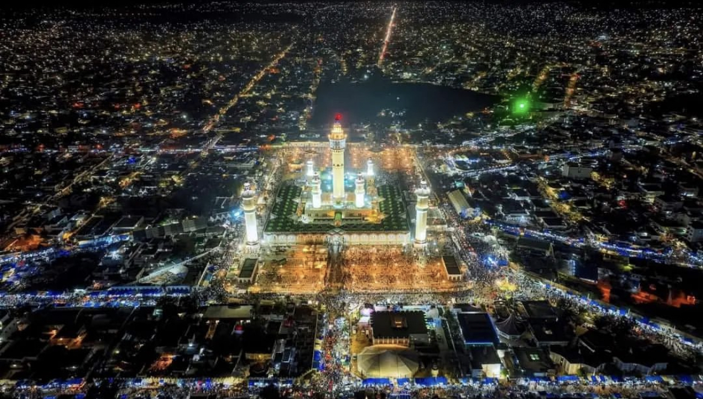
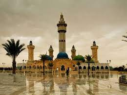
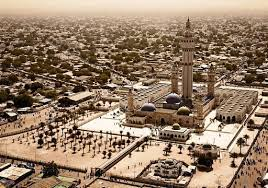

| Content |
|---|
| History |
| Fondation |
| Books |
| Family |
Muhammad ibn Muhammad ibn Habibullaah (his full name) carried the name of his father's master,
Muhammad Sall, who came from the village of Bamba. Cheikh Bamba was the second son of Maam Mor
Anta Saly Mbacke and Maam Mariyama Bousso better known by the name Maam Diaara Bousso, or
Diaratoullah in Arabic, which means neighbor of God
. Both his parents are direct descendants of the
famous patriarch Maam Mahram Mbacke (the grandfather of Bamba, Maam Balla Aicha, was the youngest
son of Maam Mahram). The other great figure of Sufi Islam of Senegal, El Hadji Malick Sy Tidiane, was also
a direct descendant of Maam Mahram Mbacke by his father's mother (Maam Maty Mbacke, daughter of
Mame Thierno Farimata Mbacke ,who is also a son of Mahram).
Sheikh Mouhamadou Lamine Diop wrote:
Ahmadou Bamba accompanied the procession that carried the mortal remains of his father up to Dékhelé. Along the way, some offered him their horses, but he replied that he preferred to walk. The large crowd gathered for the funeral chose Serigne Taiba Muhammad Ndoumbé March Syll to lead the funeral service. When the service was over, Serigne Taiba ordered the crowd to observe silence, and gave a funeral oration in which he presented his condolences to the family of the deceased and in particular addressed Ahmadou Bamba as follows:
Where is Serigne Bamba?
Come closer!
He approached the speaker so that they could see, hear, and answer him without raising his voice (he did not come closer in order not to create any disturbance). Come closer!
I hear you well
The speaker presented his condolences before continuing:
I want you to accompany us and other dignitaries and colleagues and your father to the Damel so that we can present our condolences to him, because the deceased was his intimate friend, his personal adviser and guide, and we commend you to him to enable you to have the same place with him that your father enjoyed and have the same benefits.
I thank you for your condolences and advice. Regarding the Damel, it is not my habit to visit monarchs. I have no ambition with regard to their wealth and do not seek honors before the Supreme Lord. These statements sowed confusion in the crowd. The pious were astonished to see a young man transcend the trivialities of temporal power and dare implicitly to criticize those who aspired to earthly riches. Some people from the crowd were surprised to see him turn away from the free offer of prestige. Some even viewed him as unbalanced.



Chiekh Ahmadou Bamba founded the Mouride brotherhood in 1883, with its capital in Touba, Senegal. Today, Touba serves as the location of the sub-Saharan Africa's largest mosque, which was built by the Mourides.
Cheikh Ahmadou Bamba's teachings emphasized the virtues of pacifism, hard work and good manners through what is commonly known as Jihādu nafs which emphasizes a personal struggle over negative instincts.
As an ascetic marabout who wrote tracts on meditation, rituals, work, and Quranic study, he is perhaps best known for his emphasis on work and industriousness.
Cheikh Amadou Bamba is the author of various manuscripts, most of which are currently held at the library of the Great Mosque of Touba. Below is a selection of some Bamba's writings: